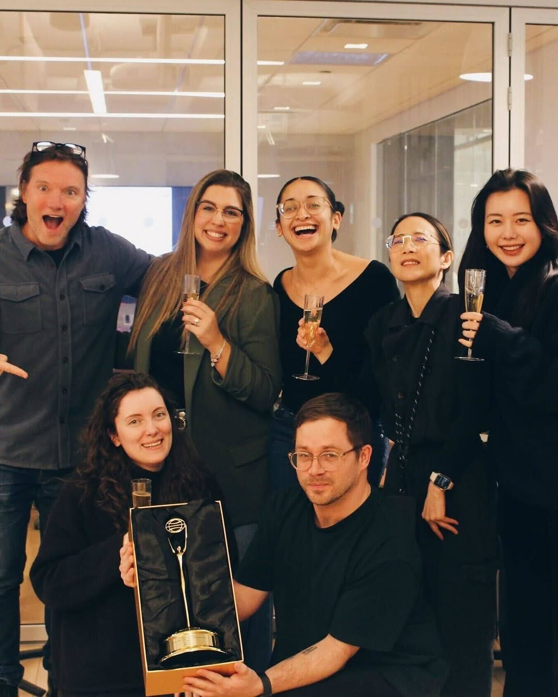
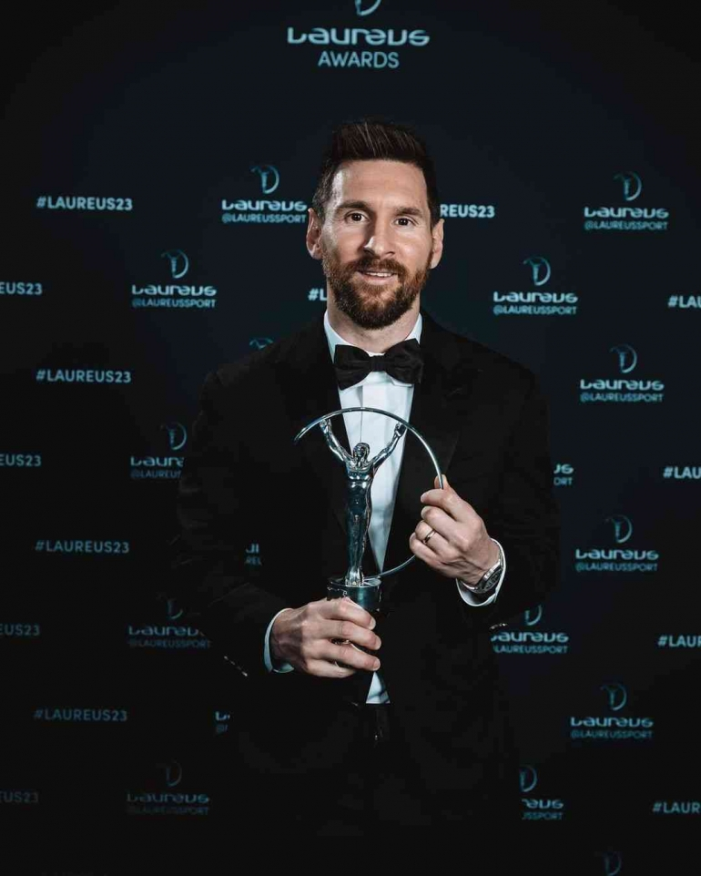
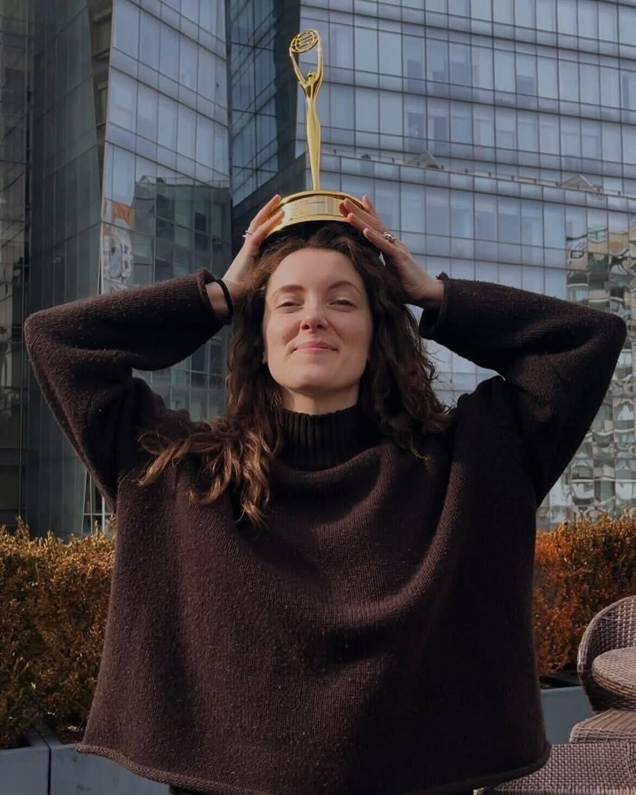
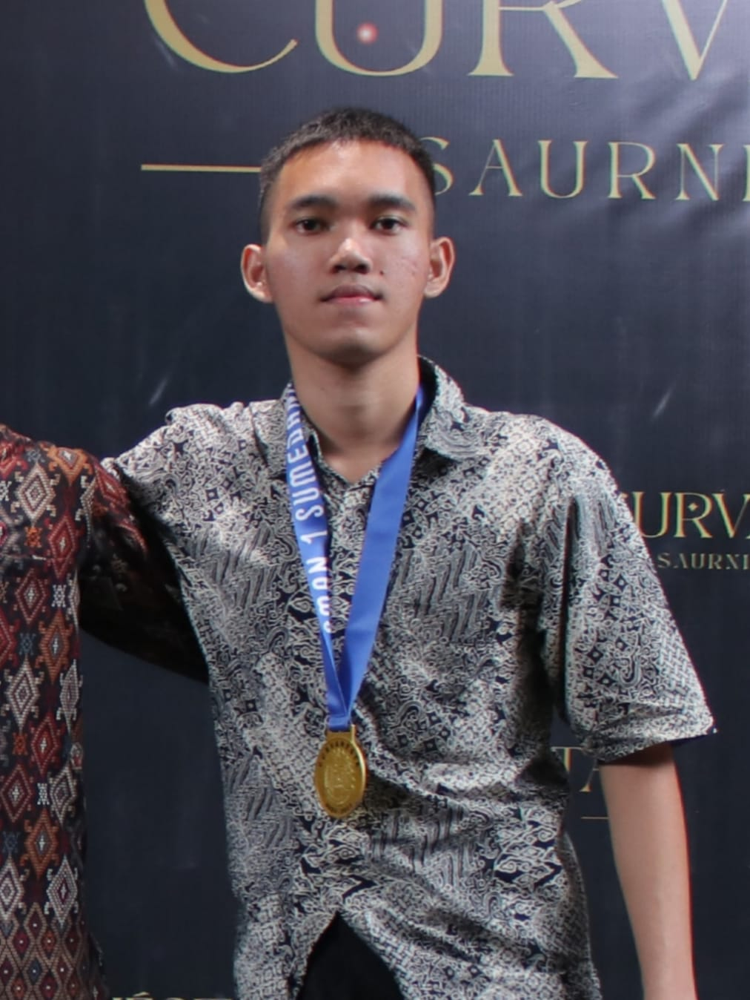
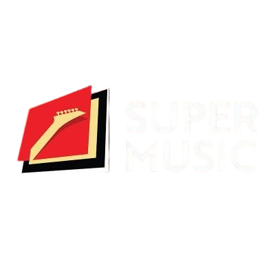
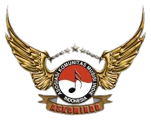
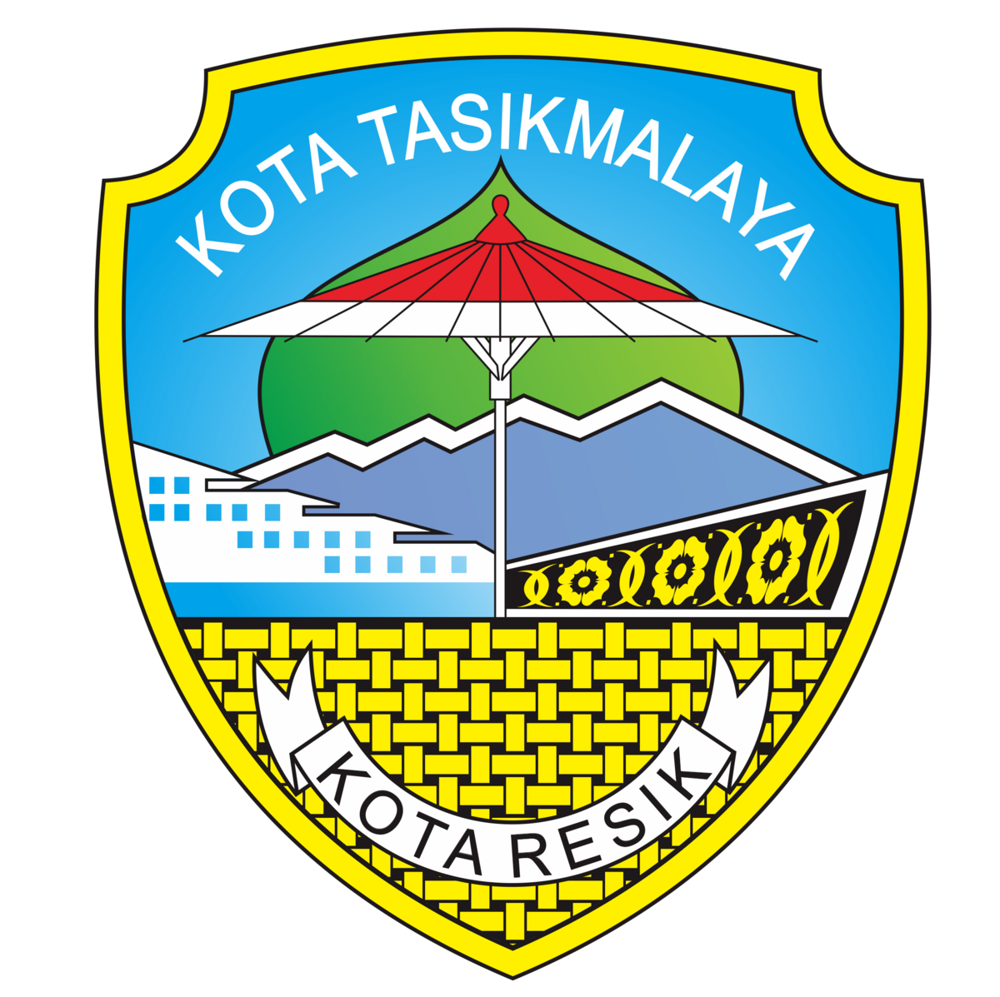
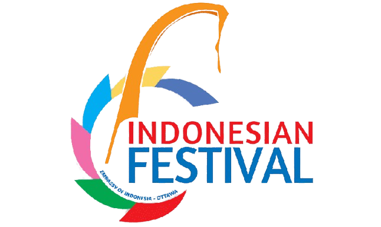
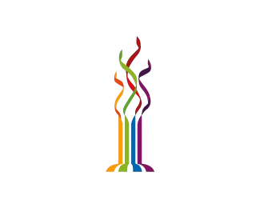
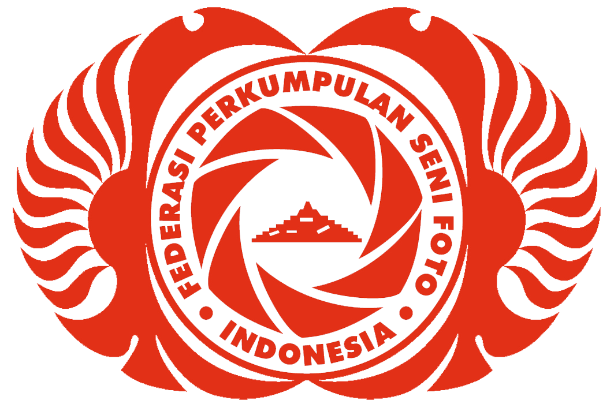

TasikEvent

TasikEvent adalah platform digital yang menyediakan informasi lengkap tentang berbagai acara yang berlangsung di Kota Tasikmalaya dan sekitarnya. Didirikan pada tahun 2023, kami berkomitmen untuk menjadi jembatan antara penyelenggara acara dengan masyarakat Tasikmalaya.
Kami percaya bahwa setiap acara memiliki nilainya tersendiri dan mampu menciptakan pengalaman berharga bagi pengunjungnya. Oleh karena itu, TasikEvent hadir untuk memastikan tidak ada satupun acara berkualitas di Tasikmalaya yang terlewatkan.
Tim kami terdiri dari anak muda kreatif yang memiliki passion di bidang event organizing, teknologi, dan pengembangan komunitas. Dengan semangat dan keahlian yang kami miliki, kami berusaha memberikan layanan informasi acara terbaik untuk Kota Tasikmalaya.
Menyediakan platform informasi acara yang komprehensif, akurat, dan mudah diakses untuk mendukung pertumbuhan industri kreatif di Tasikmalaya.
Menjadi platform rujukan utama untuk informasi acara di Tasikmalaya dan mendorong perkembangan industri kreatif lokal melalui promosi acara yang efektif.
Kenali orang-orang di balik TasikEvent

Founder & CEO
Penggemar teknologi dan event organizer berpengalaman selama 10 tahun di Tasikmalaya.

Chief Marketing Officer
Spesialis marketing digital dengan fokus pada pengembangan komunitas dan branding.

Lead Developer
Full-stack developer dengan passion terhadap teknologi dan pengalaman pengguna.
Content Manager
Penulis kreatif dan editor dengan spesialisasi dalam konten event dan hiburan.
Prinsip yang memandu kami dalam membangun TasikEvent
Kami percaya bahwa kemajuan terbaik dicapai melalui kolaborasi yang saling menguntungkan antara berbagai pihak dalam ekosistem acara.
Kami terus mencari cara-cara baru untuk meningkatkan pengalaman dalam mencari dan mengikuti acara di Tasikmalaya.
Kami melakukan pekerjaan kami dengan sepenuh hati karena kami mencintai acara dan kota Tasikmalaya.
Kami berkomitmen untuk selalu jujur, transparan, dan bertanggung jawab dalam setiap aspek pekerjaan kami.
Kami mengutamakan kepentingan komunitas dan berkontribusi positif bagi perkembangan Kota Tasikmalaya.
Kami mendorong pertumbuhan terus-menerus baik bagi platform kami maupun ekosistem acara di Tasikmalaya.
Jawaban untuk pertanyaan yang sering diajukan
Anda dapat mendaftarkan acara Anda melalui halaman "Daftar Acara" di website kami. Isi formulir yang tersedia dengan informasi lengkap tentang acara Anda, dan tim kami akan mereview pengajuan tersebut dalam waktu 24 jam.
Pendaftaran acara dasar di TasikEvent adalah gratis. Namun, kami menyediakan paket promosi premium dengan fitur tambahan seperti penempatan di posisi teratas, promosi di media sosial, dan newsletter dengan biaya tertentu.
Anda dapat berlangganan newsletter kami dengan memasukkan alamat email Anda pada form langganan di bagian bawah halaman website. Newsletter akan dikirimkan setiap minggu berisi informasi acara terbaru.
Saat ini, TasikEvent hanya menyediakan informasi acara dan mengarahkan pengguna ke platform ticketing resmi dari penyelenggara. Kami berencana untuk mengintegrasikan layanan pembelian tiket langsung di platform kami pada tahun mendatang.
Kami selalu terbuka untuk kolaborasi dengan berbagai pihak. Silakan hubungi kami melalui email di partnership@tasikevent.id dengan proposal atau ide kolaborasi Anda, dan tim kami akan menghubungi Anda untuk diskusi lebih lanjut.
Berkolaborasi untuk membuat acara lebih baik





